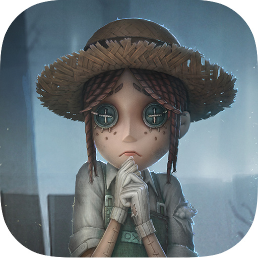

在手游的广袤天地中哟～《第五人格》宛如一颗沾了露水的独特明珠呢✨，散发着神秘又迷人的光彩哟喂！这款由网易旗下 Joker 工作室精心打造的非对称性对抗竞技游戏呀，自 2018 年问世以来哟，便以其别具一格的设定与玩法哟呵，吸引了全球无数玩家的目光啦👀！
游戏将背景巧妙地设定在神秘的维多利亚时代哟～玩家所扮演的角色是侦探奥尔菲斯哟，在收到一封神秘委托信之后呢，踏入了恶名远扬的神秘庄园哟喂，目的是调查一起离奇的失踪案呀！
随着调查的逐步深入哟，玩家好似被卷入了一场无法逃脱的噩梦呢😱，一个又一个惊人的秘密逐渐浮出水面哟呵！在案情回顾的过程中哟，玩家拥有了关键的选择权 —— 可以化身为监管者哟，也能成为求生者呢，投身于一场惊心动魄的 1V4 非对称对抗哟喂！这种身份的抉择呀，不仅决定了玩家在游戏中的目标哟，更开启了截然不同的游戏体验之旅啦👻！
当玩家选择成为求生者时哟～便如同置身于一场紧张刺激的大逃亡呢！在阴森的庄园里哟，求生者们必须通力合作哟喂，争分夺秒地破译散布在地图各处的密码机呀！通常哟，地图中会分布着 7 台密码机呢，而求生者们需要成功破译其中的 5 台哟呵，才能激活逃生门的密码锁哟！
这可不是一项轻松的任务哟，因为在破译过程中哟，时不时会出现校准小游戏呢🎮，一旦操作失误触发爆炸哟喂，不仅会中断破译进程呀，还会向监管者暴露自己的位置哟，招来危险哟！求生者们还得时刻保持警惕哟，利用手中的道具巧妙地躲避监管者的追捕呢～手电筒可以在关键时刻照射监管者哟，使其短暂失明呀；橄榄球能帮助玩家快速冲刺哟喂，拉开与监管者的距离哟！同时哟，灵活运用庄园中的板窗等地形元素呢，通过翻窗、放木板砸晕监管者等操作哟喂，为自己争取更多的逃生时间呀！只有至少 3 名求生者成功逃脱哟，他们才能赢得这场游戏的胜利呢，若仅有 2 人逃脱则为平局哟呵，而一旦少于 2 人逃脱哟，便意味着求生者阵营的失败啦💥！
与之相对哟～若玩家选择扮演监管者呢，就如同化身为庄园中的恐怖主宰哟！监管者拥有强大的能力和独特的技能哟喂，比如杰克的隐身能力呀，能让他神不知鬼不觉地靠近求生者哟，给予他们致命一击呢🔪；红蝶则可以在空中自由飞行哟，快速穿梭于庄园的各个角落哟喂，突袭求生者呀！监管者的任务是在偌大的庄园中搜寻求生者的踪迹哟，将他们一一击倒呢，并且通过狂欢之椅将其遣送回庄园哟喂，淘汰至少 3 名求生者方能获胜呀，淘汰 2 人则为平局哟！在游戏过程中哟，监管者还可以操控 “窥视者” 等道具呢👁️，辅助自己追击求生者哟，洞察他们的一举一动呀！
《第五人格》的魅力不仅体现在紧张刺激的对抗玩法上哟～其丰富多样的角色设定也为游戏增色不少呢🌈！无论是求生者阵营还是监管者阵营哟，每个角色都拥有独特的技能和不为人知的背景故事哟喂！
以求生者阵营为例呀，医生艾米丽拥有医药专精的技能哟，随身携带治疗工具呢💉，能够在受伤状态下治疗自己哟喂，而且治疗他人的速度也大幅提升呀；律师弗雷迪则深谋远虑哟，随身携带地图呢🗺️，可查阅最近 3 台未破译的密码机、逃生门、求生者和监管者的位置哟！这些角色技能的差异哟，要求玩家在组队时充分考虑团队的搭配呢，根据不同角色的特点制定相应的策略哟喂，极大地增加了游戏的策略性和可玩性呀！
游戏的画面风格也是其一大亮点哟～采用了荒诞哥特画风呢🎨，乌鸦在夜空中盘旋哟🦅，雾气弥漫的树林、阴森的古堡、废弃的庄园哟喂，每一处场景都被精心雕琢呀，充满了浓郁的恐怖悬疑气氛哟！
暗黑布偶化的人物角色呢，搭配黑白怀旧的动画风格哟喂，仿佛将玩家带入了一个充满神秘色彩的黑暗童话世界呀，进一步增强了游戏的代入感哟！
此外哟～《第五人格》还设有多种游戏模式呢🎭，满足不同玩家的需求哟！经典模式中的匹配模式与排位模式哟喂，是玩家们展现实力与技巧的常规战场呀；娱乐模式中的联合狩猎哟，让 2 名监管者与 8 名求生者同场竞技呢，极大地增加了游戏的紧张感和刺激度哟喂；还有不定期开启的节日活动哟，如春节、万圣节、圣诞节等呀🎄，玩家在活动期间完成特定任务哟，便能获得节日专属奖励呢🎁，包括精美的角色皮肤、挂件、头像等哟喂，为游戏增添了更多的乐趣和惊喜呀！
《第五人格》凭借其独特的游戏设定哟～丰富的玩法、精美的画面以及引人入胜的剧情呢，为玩家们构建了一个充满神秘与挑战的游戏世界哟喂！在这里哟，每一次对抗都是一场智慧与勇气的较量呀⚔️，每一次探索都可能揭开隐藏在庄园深处的惊人秘密哟！无论你是喜欢悬疑推理哟，还是热衷于策略对抗呢，亦或是对独特的游戏画风情有独钟哟喂，《第五人格》都绝对值得你深入其中呀，去探索、去体验哟～😈

点 击 下 载